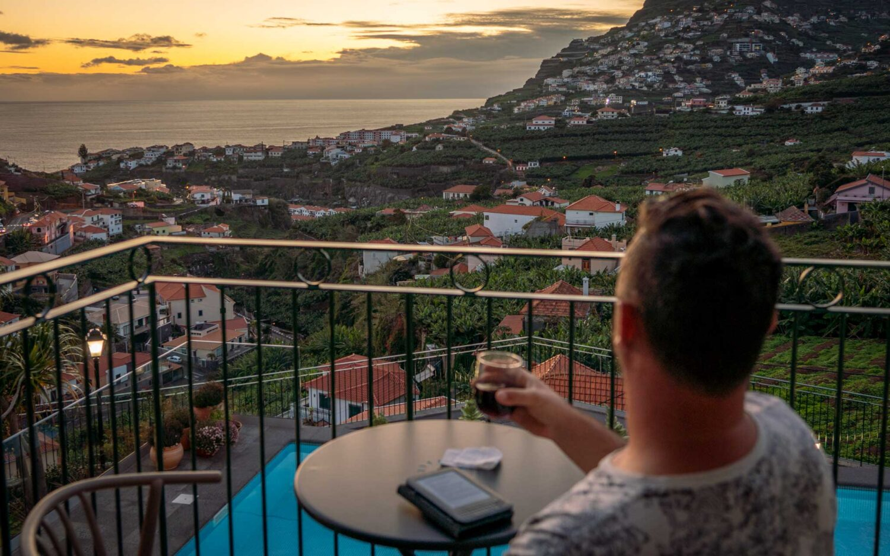

Recent Posts

Where to stay in Cornwall: a quick guide to picking the perfect base Nitish Patel Mar 8, 2021
The lingering taste of ocean salt on your lips, the scent of fish and chips doused in vinegar, the soundtrack of lapping waves and sprightly birds – Cornwall has become the most quintessential of English seaside getaways, and all for good reasons.
Read MoreUnusual and unique accommodation in the Algarve Daniel S Mar 8, 2021
I’ve been visiting the Algarve since I was a toddler and what once felt like a second home is now my first home, which has allowed me plenty of time to explore both the hidden gems of the Algarve and discover some of its more unusual accommodation along the way.
Read MorePortugal Coronavirus travel restrictions July 2021 Dan Johnson June 8, 2021
This article has been live since May 2020, and I update it weekly or whenever a major announcement is made about Portugal coronavirus travel rules. Our lockdown has come to an end and things are nearly all open again, and I want to give you the best possible info around Portugal COVID rules for travel.
Read More

What’s it like visiting Madeira right now? Pretty damn dreamy… Maria Dsouza Mar 30, 2021
The stunning island of Madeira has a lot to offer – incredible hiking and adventure sports, luxury resorts and rural retreats, a dramatic coastline of black sand beaches and tumbling waterfalls, and the golden-sand island of Porto Santo.
Read More